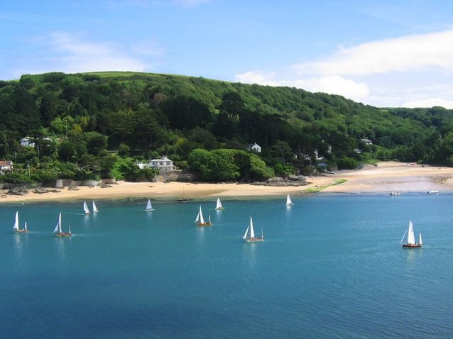
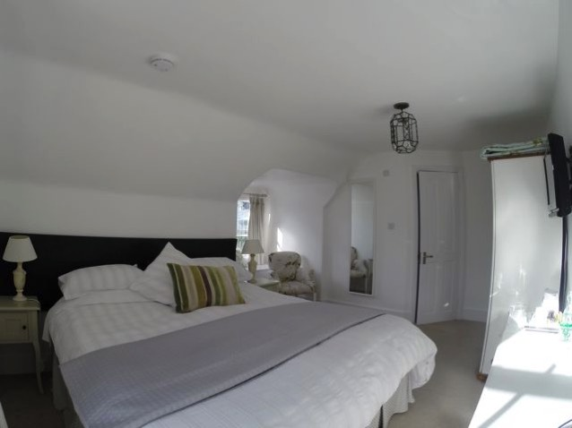
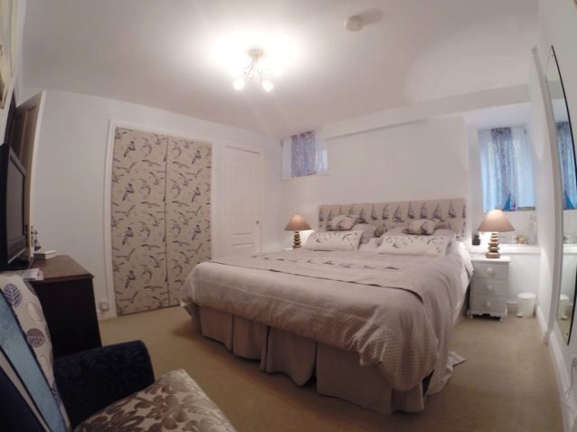
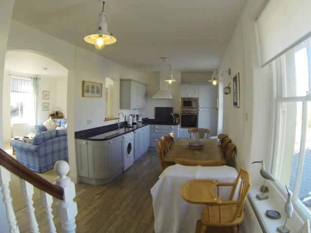
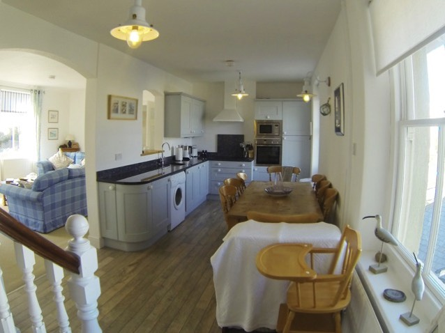
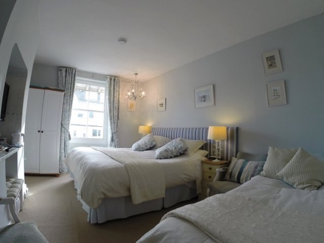
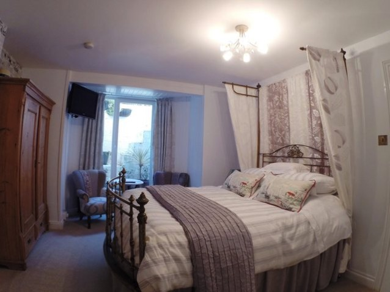
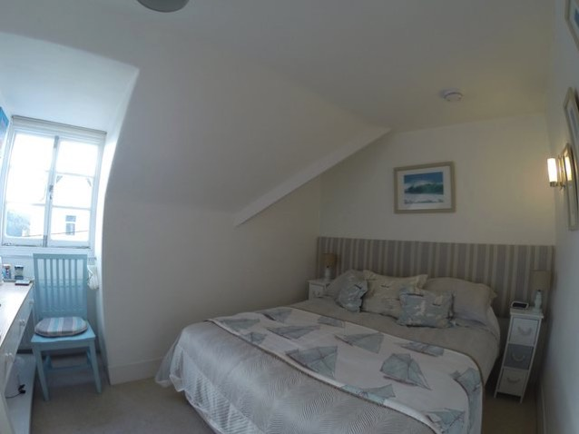
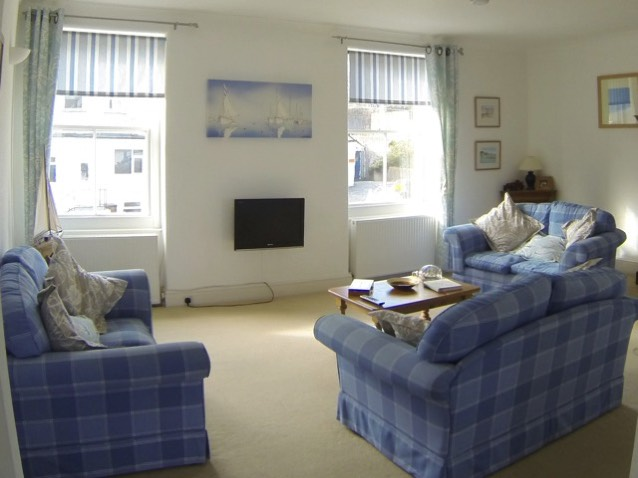

Quality accommodation in Salcombe, South Devon — comfortable en-suite rooms, five minutes from the town centre and beaches.
Explore Our Rooms
Come and stay with us at the Waverley in the beautiful seaside town of Salcombe, surrounded by unspoilt countryside and a magnificent coast of cliffs and beaches. We offer comfortable en-suite rooms for up to 12 guests, with a choice of Bed & Breakfast or self-catering, a full English breakfast menu and off-street parking.
Six en-suite B&B rooms across lower and upper Waverley — doubles, twins and family rooms — plus Upper Waverley as a self-contained self-catering apartment with 3 en-suite bedrooms, kitchen-diner and lounge.

Two comfortable double rooms with en-suite bathrooms, flat-screen TV and tea & coffee making facilities.
B&B from £100 pppn (double or twin, as published)

Four flexible double / twin / family rooms — six bedrooms in total across family, triple, twin and double layouts.
B&B from £100 pppn · Single from £85 per night

A self-contained apartment: 3 en-suite bedrooms, kitchen-diner and lounge, with WiFi and off-street parking.
Self-catering from £180 per night





Call us on 01548 842633
Email: pauline@waverleybandb.co.uk
Waverley, Salcombe, South Devon — 5 minutes' walk to the town centre and beaches. Mobile: 07980 012608